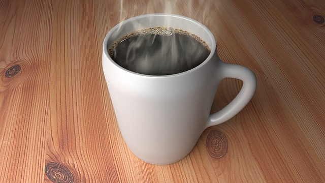

Here we have a recipe for those who enjoy hot coffee in the morning. Making hot coffee in the morning is a great way to save money and get to know all the various flavors and regions of coffee. Here is how!
To make delicious hot coffee here is all you need to do:

First, grind 50 grams of coffee beans in your grinder.
Now, rinse your filter with water and place it in your coffee maker. This will eliminate any paper-y taste.
Next, add 800 grams of water to your coffee maker .
Allow four-six minutes for the coffee to brew.
Then enjoy your morning!